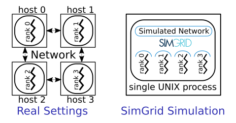
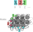
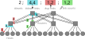
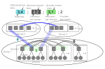
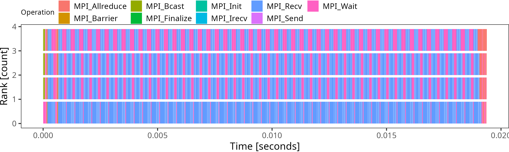

Simulating MPI Applications
Discover SMPI
SimGrid can not only simulate algorithms, but it can also be used to execute real MPI applications on top of virtual, simulated platforms with the SMPI module. Even complex C/C++/F77/F90 applications should run out of the box in this environment. Almost all proxy apps provided by the ExaScale Project only require minor modifications to run on top of SMPI.
This setting permits one to debug your MPI applications in a perfectly reproducible setup, with no Heisenbugs. Enjoy the full Clairvoyance provided by the simulator while running what-if analyses on platforms that are still to be built! Several production-grade MPI applications use SimGrid for their integration and performance testing.
MPI 2.2 is already partially covered: over 160 primitives are supported. Some parts of the standard are still missing: MPI-IO, MPI3 collectives, spawning ranks, inter-communicators, and some others. If one of the functions you use is still missing, please drop us an email. We may find the time to implement it for you.
Multi-threading support is very limited in SMPI. Only funneled applications are supported: at most one thread per rank can issue any MPI calls. For better timing predictions, your application should even be completely mono-threaded. Using OpenMP (or pthreads directly) may greatly decrease SimGrid predictive power. That may still be OK if you only plan to debug your application in a reproducible setup, without any performance-related analysis.
How does it work?
In SMPI, communications are simulated while computations are emulated. This means that while computations occur as they would in the real systems, communication calls are intercepted and achieved by the simulator.
To start using SMPI, you just need to compile your application with
smpicc instead of mpicc, or with smpiff instead of
mpiff, or with smpicxx instead of mpicxx. Then, the only
difference between the classical mpirun and the new smpirun is
that it requires a new parameter -platform with a file describing
the simulated platform on which your application shall run.
Internally, all ranks of your application are executed as threads of a
single unix process. That’s not a problem if your application has
global variables, because smpirun loads one application instance
per MPI rank as if it was another dynamic library. Then, MPI
communication calls are implemented using SimGrid: data is exchanged
through memory copy, while the simulator’s performance models are used
to predict the time taken by each communication. Any computations
occurring between two MPI calls are benchmarked, and the corresponding
time is reported into the simulator. Please refer to SMPI: Simulate MPI Applications for further information.

Describing Your Platform
As an SMPI user, you are supposed to provide a description of your simulated platform, which is mostly a set of simulated hosts and network links with some performance characteristics. SimGrid provides plenty of documentation and examples (in the examples/platforms source directory), and this section only shows a small set of introductory examples.
Feel free to skip this section if you want to jump right away to usage examples.
Simple Example with 3 hosts
Imagine you want to describe a little platform with three hosts, interconnected as follows:

This can be done with the following platform file, which considers the simulated platform as a graph of hosts and network links.
<?xml version='1.0'?>
<!DOCTYPE platform SYSTEM "https://simgrid.org/simgrid.dtd">
<platform version="4.1">
<zone id="AS0" routing="Full">
<host id="host0" speed="1Gf"/>
<host id="host1" speed="2Gf"/>
<host id="host2" speed="40Gf"/>
<link id="link0" bandwidth="125MBps" latency="100us"/>
<link id="link1" bandwidth="50MBps" latency="150us"/>
<link id="link2" bandwidth="250MBps" latency="50us"/>
<route src="host0" dst="host1"><link_ctn id="link0"/><link_ctn id="link1"/></route>
<route src="host1" dst="host2"><link_ctn id="link1"/><link_ctn id="link2"/></route>
<route src="host0" dst="host2"><link_ctn id="link0"/><link_ctn id="link2"/></route>
</zone>
</platform>
The elements basic elements (with <host> and <link>) are described first, and then the routes between any pair of hosts are explicitly given with <route>.
Any host must be given a computational speed in flops while links must be given a latency and a bandwidth. You can write 1Gf for 1,000,000,000 flops (full list of units in the reference guide of <host> and <link>).
Routes defined with <route> are symmetrical by default, meaning that the list of traversed links from A to B is the same as from B to A. Explicitly define non-symmetrical routes if you prefer.
Cluster with a Crossbar
A very common parallel computing platform is a homogeneous cluster in which hosts are interconnected via a crossbar switch with as many ports as hosts so that any disjoint pairs of hosts can communicate concurrently at full speed. For instance:
<?xml version='1.0'?>
<!DOCTYPE platform SYSTEM "https://simgrid.org/simgrid.dtd">
<platform version="4.1">
<zone id="world" routing="Full">
<cluster id="cluster-crossbar"
prefix="node-" radical="0-65535" suffix=".simgrid.org"
speed="1Gf" bw="125MBps" lat="50us"/>
</zone>
</platform>
One specifies a name prefix and suffix for each host and then gives an
integer range. In the example, the cluster contains 65535 hosts (!),
named node-0.simgrid.org to node-65534.simgrid.org. All hosts
have the same power (1 Gflop/sec) and are connected to the switch via
links with the same bandwidth (125 MBytes/sec) and latency (50
microseconds).
Todo
Add the picture.
Torus Cluster
Many HPC facilities use torus clusters to reduce sharing and
performance loss on concurrent internal communications. Modeling this
in SimGrid is very easy. Simply add a topology="TORUS" attribute
to your cluster. Configure it with the topo_parameters="X,Y,Z"
attribute, where X, Y, and Z are the dimensions of your
torus.

<?xml version='1.0'?>
<!DOCTYPE platform SYSTEM "https://simgrid.org/simgrid.dtd">
<platform version="4.1">
<zone id="world" routing="Full">
<cluster id="bob_cluster" topology="TORUS" topo_parameters="3,2,2"
prefix="node-" radical="0-11" suffix=".simgrid.org"
speed="1Gf" bw="125MBps" lat="50us"
loopback_bw="100MBps" loopback_lat="0"/>
</zone>
</platform>
Note that in this example, we used loopback_bw and
loopback_lat to specify the characteristics of the loopback link
of each node (i.e., the link allowing each node to communicate with
itself). We could have done so in the previous example too. When no
loopback is given, the communication from a node to itself is handled
as if it were two distinct nodes: it goes twice through the private
link and through the backbone (if any).
Fat-Tree Cluster
This topology was introduced to reduce the number of links in the
cluster (and thus reduce its price) while maintaining a high bisection
bandwidth and a relatively low diameter. To model this in SimGrid,
pass a topology="FAT_TREE" attribute to your cluster. The
topo_parameters=#levels;#downlinks;#uplinks;link count follows the
semantic introduced in Figure 1(b) of this article.
Here is the meaning of this example: 2 ; 4,4 ; 1,2 ; 1,2
That’s a two-level cluster (thus the initial
2).Routers are connected to 4 elements below them, regardless of their level. Thus the
4,4component used as#downlinks. This means that the hosts are grouped by 4 on a given router, and that there are 4 level-1 routers (in the middle of the figure).Hosts are connected to only 1 router above them, while these routers are connected to 2 routers above them (thus the
1,2used as#uplink).Hosts have only one link to their router while every path between level-1 routers and level-2 routers uses 2 parallel links. Thus the
1,2used aslink count.

<?xml version='1.0'?>
<!DOCTYPE platform SYSTEM "https://simgrid.org/simgrid.dtd">
<platform version="4.1">
<zone id="world" routing="Full">
<cluster id="bob_cluster"
prefix="node-" radical="0-15" suffix=".simgrid.org"
speed="1Gf" bw="125MBps" lat="50us"
topology="FAT_TREE" topo_parameters="2;4,4;1,2;1,2"
loopback_bw="100MBps" loopback_lat="0" />
</zone>
</platform>
Dragonfly Cluster
This topology was introduced to further reduce the number of links
while maintaining a high bandwidth for local communications. To model
this in SimGrid, pass a topology="DRAGONFLY" attribute to your
cluster. It’s based on the implementation of the topology used on
Cray XC systems, described in the paper
Cray Cascade: A scalable HPC system based on a Dragonfly network.
System description follows the format topo_parameters=#groups;#chassis;#routers;#nodes
For example, 3,4 ; 3,2 ; 3,1 ; 2:
3,4: There are 3 groups with 4 links between each (blue level). Links to the nth group are attached to the nth router of the group on our implementation.3,2: In each group, there are 3 chassis with 2 links between each nth router of each group (black level)3,1: In each chassis, 3 routers are connected with a single link (green level)2: Each router has two nodes attached (single link)

<?xml version='1.0'?>
<!DOCTYPE platform SYSTEM "https://simgrid.org/simgrid.dtd">
<platform version="4.1">
<zone id="world" routing="Full">
<cluster id="bob_cluster" topology="DRAGONFLY" topo_parameters="3,4;4,3;5,1;2"
prefix="node-" radical="0-119" suffix=".simgrid.org"
speed="1Gf" bw="125MBps" lat="50us"
loopback_bw="100MBps" loopback_lat="0" limiter_link="150MBps"/>
</zone>
</platform>
Final Word
We only glanced over the abilities offered by SimGrid to describe the platform topology. Other networking zones model non-HPC platforms (such as wide area networks, ISP networks comprising set-top boxes, or even your own routing schema). You can interconnect several networking zones in your platform to form a tree of zones, that is both a time- and memory-efficient representation of distributed platforms. Please head to the dedicated documentation for more information.
Hands-on!
It is time to start using SMPI yourself. For that, you first need to install it somehow, and then you will need an MPI application to play with.
使用 Docker
The easiest way to take the tutorial is to use the dedicated Docker image. Once you installed Docker itself, simply do the following:
$ docker pull simgrid/tuto-smpi
$ docker run --user $UID:$GID -it --rm --name simgrid --volume ~/smpi-tutorial:/source/tutorial simgrid/tuto-smpi bash
More info if you want to understand that command. Skip it if you want. The --user $UID:$GID part request docker to use your
login name and group within the container too. -it requests to run the command interactively in a terminal. --rm asks to
remove the container once the command is done. --name gives a name to the container. --volume makes one directory of
your machine visible from within the container. The part on the left of : is the name outside while the right part is the
name within the container. The last words on the line are the docker image to use as a basis for the container (here,
simgrid/tuto-smpi) and the program to run when the container starts (here, bash).
This will start a new container with all you need to take this
tutorial, and create a smpi-tutorial directory in your home on
your host machine that will be visible as /source/tutorial within the
container. You can then edit the files you want with your favorite
editor in ~/smpi-tutorial, and compile them within the
container to enjoy the provided dependencies.
Warning
Any change to the container out of /source/tutorial will be lost
when you log out of the container, so don’t edit the other files!
All needed dependencies are already installed in this container (SimGrid, the C/C++/Fortran compilers, make, pajeng, and R). Vite being only optional in this tutorial, it is not installed to reduce the image size.
The container also includes the example platform files from the
previous section as well as the source code of the NAS Parallel
Benchmarks. These files are available under
/source/simgrid-template-smpi in the image. You should copy it to
your working directory when you first log in:
$ cp -r /source/simgrid-template-smpi/* /source/tutorial
$ cd /source/tutorial
使用本机环境
To take the tutorial on your machine, you first need to install
SimGrid, the C/C++/Fortran compilers, and also pajeng to
visualize the traces. You may want to install Vite to get a first glance at the
traces. The provided code template requires make to compile. On
Debian and Ubuntu, you can get them as follows:
$ sudo apt install simgrid pajeng make gcc g++ gfortran python3 vite
For R analysis of the produced traces, you may want to install R.
# install R and necessary packages
$ sudo apt install r-base r-cran-devtools r-cran-tidyverse
To take this tutorial, you will also need the platform files from the previous section as well as the source code of the NAS Parallel Benchmarks. Just clone this repository to get them all:
$ git clone https://framagit.org/simgrid/simgrid-template-smpi.git
$ cd simgrid-template-smpi/
If you struggle with the compilation, then you should double-check your SimGrid installation. On need, please refer to the Troubleshooting your Project Setup section.
Lab 0: Hello World
It is time to simulate your first MPI program. Use the simplistic example roundtrip.c that comes with the template.
/* Copyright (c) 2018-2025. The SimGrid Team. All rights reserved. */
/* This program is free software; you can redistribute it and/or modify it
* under the terms of the license (GNU LGPL) which comes with this package. */
#include <mpi.h>
#include <stdio.h>
#include <stdlib.h>
#define N (1024 * 1024 * 1)
int main(int argc, char* argv[])
{
int size, rank;
struct timeval start, end;
char hostname[256];
int hostname_len;
MPI_Init(&argc, &argv);
MPI_Comm_rank(MPI_COMM_WORLD, &rank);
MPI_Comm_size(MPI_COMM_WORLD, &size);
MPI_Get_processor_name(hostname, &hostname_len);
// Allocate a 1 MiB buffer
char* buffer = malloc(sizeof(char) * N);
// Communicate along the ring
if (rank == 0) {
gettimeofday(&start, NULL);
printf("Rank %d (running on '%s'): sending the message rank %d\n", rank, hostname, 1);
MPI_Send(buffer, N, MPI_BYTE, 1, 1, MPI_COMM_WORLD);
MPI_Recv(buffer, N, MPI_BYTE, size - 1, 1, MPI_COMM_WORLD, MPI_STATUS_IGNORE);
printf("Rank %d (running on '%s'): received the message from rank %d\n", rank, hostname, size - 1);
gettimeofday(&end, NULL);
printf("%f\n", (end.tv_sec * 1000000.0 + end.tv_usec - start.tv_sec * 1000000.0 - start.tv_usec) / 1000000.0);
} else {
MPI_Recv(buffer, N, MPI_BYTE, rank - 1, 1, MPI_COMM_WORLD, MPI_STATUS_IGNORE);
printf("Rank %d (running on '%s'): receive the message and sending it to rank %d\n", rank, hostname,
(rank + 1) % size);
MPI_Send(buffer, N, MPI_BYTE, (rank + 1) % size, 1, MPI_COMM_WORLD);
}
MPI_Finalize();
return 0;
}
Compiling and Executing
Compiling the program is straightforward (double-check your SimGrid installation if you get an error message):
$ smpicc -O3 roundtrip.c -o roundtrip
Once compiled, you can simulate the execution of this program on 16
nodes from the cluster_crossbar.xml platform as follows:
$ smpirun -np 16 -platform cluster_crossbar.xml -hostfile cluster_hostfile ./roundtrip
The
-np 16option, just like in regular MPI, specifies the number of MPI processes to use.The
-hostfile cluster_hostfileoption, just like in regular MPI, specifies the host file. If you omit this option,smpirunwill deploy the application on the first machines of your platform.The
-platform cluster_crossbar.xmloption, which doesn’t exist in regular MPI, specifies the platform configuration to be simulated.At the end of the line, one finds the executable name and command-line arguments (if any – roundtrip does not expect any arguments).
Feel free to tweak the content of the XML platform file and the
program to see the effect on the simulated execution time. It may be
easier to compare the executions with the extra option
--cfg=smpi/display-timing:yes. Note that the simulation accounts
for realistic network protocol effects and MPI implementation
effects. As a result, you may see “unexpected behavior” like in the
real world (e.g., sending a message 1 byte larger may lead to
significantly higher execution time).
Lab 1: Visualizing LU
We will now simulate a larger application: the LU benchmark of the NAS
suite. The version provided in the code template was modified to
compile with SMPI instead of the regular MPI. Compare the difference
between the original config/make.def.template and the
config/make.def that was adapted to SMPI. We use smpiff and
smpicc as compilers, and don’t pass any additional library.
Now compile and execute the LU benchmark, class S (i.e., for small data size) with 4 nodes.
$ make lu NPROCS=4 CLASS=S
(compilation logs)
$ smpirun -np 4 -platform ../cluster_backbone.xml bin/lu.S.4
(execution logs)
To get a better understanding of what is going on, activate the tracing mechanism, and convert the produced trace for later use:
$ smpirun -np 4 -platform ../cluster_backbone.xml -trace --cfg=tracing/filename:lu.S.4.trace bin/lu.S.4
The file lu.S.4.trace is a text file that follows the
Paje file format. This
trace can be read by the ViTE – Visual Trace Explorer or can be
transformed to a CSV file using pj_dump (from the
pajeng package). Let’s do it and grab only lines that represent an
application state, which in this case represent traced MPI operations.
$ pj_dump lu.S.4.trace | grep ^State > lu.S.4.csv
You can now produce a Gantt Chart with the following R chunk. You can either copy/paste it in an R session, or turn it into a Rscript executable to run it again and again.
# Read the data
suppressMessages(library(tidyverse))
dta <- read_csv("lu.S.4.csv",
show_col_types = FALSE,
col_names=c("Nature",
"Container",
"Type",
"Start",
"End",
"Duration",
"Imbrication",
"Value"))
# Some clean-up
dta |>
# Remove some unnecessary columns for this example
select(-Type, -Imbrication) |>
# Create the nice MPI rank and operations identifiers
mutate(Container = as.integer(gsub("rank-", "", Container)),
Value = gsub("^PMPI_", "MPI_", Value)) |>
# Rename some columns so it can better fit MPI terminology
rename(Rank = Container, Operation = Value) -> df.states
# Draw the Gantt Chart
df.states |>
ggplot() +
# Each MPI operation is becoming a rectangle
geom_rect(aes(xmin=Start, xmax=End,
ymin=Rank, ymax=Rank + 0.9,
fill=Operation)) +
# Cosmetics
xlab("Time [seconds]") +
ylab("Rank [count]") +
theme_bw(base_size=14) +
theme(
plot.margin = unit(c(0,0,0,0), "cm"),
legend.margin = margin(t = 0, unit='cm'),
panel.grid = element_blank(),
legend.position = "top",
legend.justification = "left",
legend.box.spacing = unit(0, "pt"),
legend.box.margin = margin(0,0,0,0),
legend.title = element_text(size=10)) -> plot
# Save the plot in a PNG file (dimensions in inches)
ggsave("smpi.png",
plot,
width = 10,
height = 3)
This produces a file called smpi.png with the following
content. You can find more visualization examples online.

Lab 2: Tracing and Replay of LU
Now compile and execute the LU benchmark, class A, with 32 nodes.
$ make lu NPROCS=32 CLASS=A
This takes several minutes to simulate, because all code from all processes has to be actually executed, and everything is serialized.
SMPI provides several methods to speed things up. One of them is to capture a time-independent trace of the running application and replay it on a different platform with the same amount of nodes. The replay is much faster than live simulation, as the computations are skipped (the application must be network-dependent for this to work).
You can even generate the trace during the live simulation as follows:
$ smpirun -trace-ti --cfg=tracing/filename:LU.A.32 -np 32 -platform ../cluster_backbone.xml bin/lu.A.32
The produced trace is composed of a file LU.A.32 and a folder
LU.A.32_files. You can replay this trace with SMPI thanks to smpirun.
For example, the following command replays the trace on a different platform:
$ smpirun -np 32 -platform ../cluster_crossbar.xml -hostfile ../cluster_hostfile -replay LU.A.32
All the outputs are gone, as the application is not really simulated here. Its trace is simply replayed. But if you visualize the live simulation and the replay, you will see that the behavior is unchanged. The simulation does not run much faster on this very example, but this becomes very interesting when your application is computationally hungry.
Todo
The commands should be separated and executed by some CI to make sure the documentation is up-to-date.
Lab 3: Execution Sampling on Matrix Multiplication example
The second method to speed up simulations is to sample the computation parts in the code. This means that the person doing the simulation needs to know the application and identify parts that are compute-intensive and take time while being regular enough not to ruin simulation accuracy. Furthermore, there should not be any MPI calls inside such parts of the code.
Use for this part the gemm_mpi.cpp example, which is provided by the PRACE Codevault repository.
The computing part of this example is the matrix multiplication routine
const int size = 3000;
float a[size][size];
float b[size][size];
float c[size][size];
void multiply(int istart, int iend)
{
for (int i = istart; i <= iend; ++i){
for (int j = 0; j < size; ++j) {
for (int k = 0; k < size; ++k) {
c[i][j] += a[i][k] * b[k][j];
}
}
}
}
$ smpicxx -O3 gemm_mpi.cpp -o gemm
$ time smpirun -np 16 -platform cluster_crossbar.xml -hostfile cluster_hostfile --cfg=smpi/display-timing:yes --cfg=smpi/host-speed:1000000000 ./gemm
This should end quite quickly, as the size of each matrix is only 1000x1000. But what happens if we want to simulate larger runs? Replace the size by 2000, 3000, and try again.
The simulation time increases a lot, while there are no more MPI calls performed, only computation.
The --cfg=smpi/display-timing option gives more details about execution
and advises using sampling if the time spent in computing loops seems too high.
The --cfg=smpi/host-speed:1000000000 option sets the speed of the processor used for
running the simulation. Here we say that its speed is the same as one of the
processors we are simulating (1Gf), so that 1 second of computation is injected
as 1 second in the simulation.
[5.568556] [smpi_kernel/INFO] Simulated time: 5.56856 seconds.
The simulation took 24.9403 seconds (after parsing and platform setup)
24.0764 seconds were actual computation of the application
[5.568556] [smpi_kernel/INFO] More than 75% of the time was spent inside the application code.
You may want to use sampling functions or trace replay to reduce this.
So in our case (size 3000), the simulation ran for 25 seconds, and the simulated time was 5.57s at the end. Computation by itself took 24 seconds, and can quickly grow with larger sizes (as computation is really performed, there will be variability between similar runs).
SMPI provides sampling macros to accelerate simulation by sampling iterations of large computation loops, and skip computation after a certain amount of iterations, or when the sampling is stable enough.
The two macros only slightly differ :
SMPI_SAMPLE_GLOBAL: the specified number of samples is produced by all processorsSMPI_SAMPLE_LOCAL: each process executes a specified number of iterations
So if the size of the computed part varies between processes (imbalance), it’s safer to use the LOCAL one.
To use one of them, replacing the external for loop of the multiply routine:
for (int i = istart; i <= iend; ++i)
by:
SMPI_SAMPLE_GLOBAL(int i = istart, i <= iend, ++i, 10, 0.005)
The first three parameters are the ones from the loop, while the two last ones are for sampling. They mean that at most 10 iterations will be performed and that the sampling phase can be exited earlier if the expected stability is reached after fewer samples.
Now run the code again with various sizes and parameters and check the time taken for the simulation, as well as the resulting simulated time.
[5.575691] [smpi_kernel/INFO] Simulated time: 5.57569 seconds.
The simulation took 1.23698 seconds (after parsing and platform setup)
0.0319454 seconds were actual computation of the application
In this case, the simulation only took 1.2 seconds, while the simulated time remained almost identical.
The computation results will obviously be altered since most computations are skipped. These macros thus cannot be used when results are critical for the application behavior (convergence estimation for instance will be wrong on some codes).
Lab 4: Memory folding on large allocations
Another issue that can be encountered when simulation with SMPI is lack of memory. Indeed we are executing all MPI processes on a single node, which can lead to crashes. We will use the DT benchmark of the NAS suite to illustrate how to avoid such issues.
With 85 processes and class C, the DT simulated benchmark will try to allocate 35GB of memory, which may not be available on the node you are using.
To avoid this we can simply replace the largest calls to malloc and free by calls
to SMPI_SHARED_MALLOC and SMPI_SHARED_FREE.
This means that all processes will share one single instance of this buffer.
As for sampling, results will be altered, and this should not be used for control structures.
For DT example, there are three different calls to malloc in the file, and one of them is for a needed structure.
Find it and replace the two other ones with SMPI_SHARED_MALLOC (there is only one free to replace for both of them).
Once done, you can now run
$ make dt NPROCS=85 CLASS=C
(compilation logs)
$ smpirun -np 85 -platform ../cluster_backbone.xml bin/dt.C.x BH
(execution logs)
And simulation should finish without swapping/crashing (Ignore the warning about the return value).
If control structures are also problematic, you can use SMPI_PARTIAL_SHARED_MALLOC(size, offsets, offsetscount)
macro, which shares only specific parts of the structure between processes,
and use specific memory for the important parts.
It can be freed afterward with SMPI_SHARED_FREE.
If allocations are performed with malloc or calloc, SMPI (from version 3.25) provides the option
--cfg=smpi/auto-shared-malloc-thresh:n which will replace all allocations above size n bytes by
shared allocations. The value has to be carefully selected to avoid smaller control arrays,
containing data necessary for the completion of the run.
Try to run the (non modified) DT example again, with values going from 10 to 100,000 to show that
too small values can cause crashes.
A useful option to identify the largest allocations in the code is --cfg=smpi/display-allocs:yes (from 3.27).
It will display at the end of a (successful) run the largest allocations and their locations, helping pinpoint the
targets for sharing, or setting the threshold for automatic ones.
For DT, the process would be to run a smaller class of problems,
$ make dt NPROCS=21 CLASS=A
$ smpirun --cfg=smpi/display-allocs:yes -np 21 -platform ../cluster_backbone.xml bin/dt.A.x BH
Which should output:
[smpi_utils/INFO] Memory Usage: Simulated application allocated 198533192 bytes during its lifetime through malloc/calloc calls.
Largest allocation at once from a single process was 3553184 bytes, at dt.c:388. It was called 3 times during the whole simulation.
If this is too much, consider sharing allocations for computation buffers.
This can be done automatically by setting --cfg=smpi/auto-shared-malloc-thresh to the minimum size wanted size (this can alter execution if data content is necessary)
And from there we can identify dt.c:388 as the main allocation, and the best target to convert to shared mallocs for larger simulations. Furthermore, with 21 processes, we see that this particular allocation and size was only called 3 times, which means that other processes are likely to allocate less memory here (imbalance). Using 3553184 as a threshold value might be unwise, as most processes wouldn’t share memory, so a lower threshold would be advisable.
Further Readings
You may also be interested in the SMPI reference article or these introductory slides. The SMPI reference documentation covers much more content than this short tutorial.
Finally, we regularly use SimGrid in our teachings on MPI. This way, our student can experiment with platforms that they do not have access to, and the associated visualization tools help them to understand their work. The whole material is available online, in a separate project: the SMPI CourseWare.